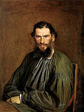
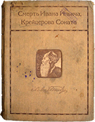

4 февраля – умер Иван Ильич
В перерыве заседания члены Судебной палаты узнают из газеты о смерти Ивана Ильича Головина, последовавшей 4 февраля 1882 после нескольких недель неизлечимой болезни. Сотоварищи покойного, любившие его, невольно рассчитывают возможные теперь перемещения по службе, и каждый думает: «Каково, умер; а я вот нет».
«Смерть Ивана Ильича» — повесть Л. Н. Толстого, над которой он работал в 1882-1886, рассказывающая о судейском чиновнике средней руки, мучительное умирание тела которого обернулось пробуждением его души («Кончена смерть, её нет больше»). Повесть признана одной из вершин мировой литературы и величайшим свершением Толстого в области малой литературной формы.
Прототип героя – Иван Ильич Мечников, старший брат выдающегося ученого Ильи Ильича Мечникова («Этюды оптимизма», «Этюды о природе человека»), признавшего Толстого писателем, «давшим наилучшее описание страха смерти».

И. H. Крамской, автор известного портрета Толстого (1873), утверждал: «Говорить о «Смерти Ивана Ильича», а тем паче восхищаться будет по меньшей мере неуместно. Это нечто такое, что перестает уже быть искусством, а является просто творчеством. Рассказ этот прямо библейский, и я чувствую глубокое волнение при мысли, что такое произведение снова появилось в русской литературе... Удивительно в этом рассказе отсутствие полное украшений, без чего, кажется, нет ни одного произведения человеческого».
«Ни у одного народа, нигде на свете нет такого гениального создания. Все мало, все мелко, все слабо и бледно в сравнении с этими 70-ю страницами» (В. В. Стасов).
«Прочёл „Смерть Ивана Ильича“. Более чем когда-либо я убежден, что величайший из всех когда-либо и где-либо бывших писателей-художников, есть Л. Н. Толстой. Его одного достаточно, чтобы русский человек не склонял стыдливо голову, когда перед ним высчитывают всё великое, что дала человечеству Европа…» (П. И. Чайковский).
«Этот рассказ — самое яркое, самое совершенное и самое сложное произведение Толстого» (В. В. Набоков).